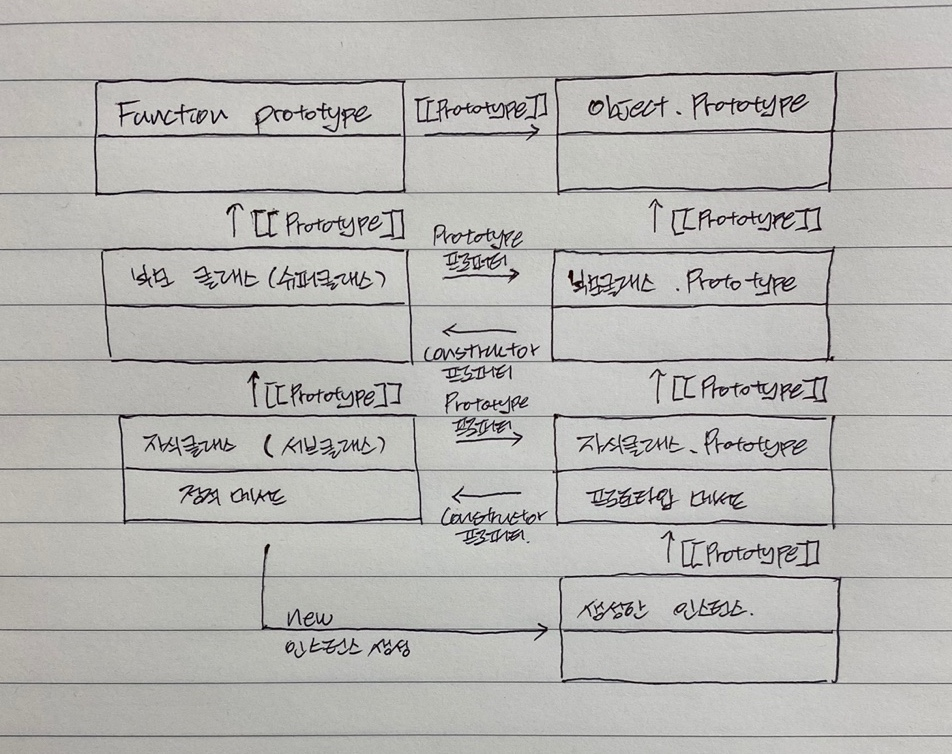

클래스
프로토타입에 대해서 알게된 후 개인적인 생각으로 클래스가 굳이 필요할까라는 생각을 했었는데 클래스를 사용하면 좀더 직관적이고, 명료하다는 느낌을 받게 되었다. 하지만 클래스를 사용하는 것과 생성자 함수를 이용한 프로토타입과의 동작부분의 차이가 없다는 생각이 들어 클래스와 프로토타입과의 차이에 대해 좀더 공부해보게 되었다
클래스
자바스크립트는 프로토타입 기반의 객체 지향 언어이지만 ES6에 클래스(Class)를 도입했다. 생성자 함수를 이용해 프로토타입을 사용하는 것과 클래스를 사용했을때와 비교했을때 몇가지 차이 점이 존재한다.
- 클래스는
new연산자 없이 호출하면 에러가 발생한다. (생성자 함수를new연산자 없이 호출하면 일반함수로서 동작한다.) - 클래스는 상속과 관련된
extends,super키워드를 지원한다. - 클래스는
let,const키워드처럼 호이스팅이 발생하지 않는것처럼 동작한다. - 클래스 내부에서는 암묵적으로 strict mode가 적용된다.
- 클래스의 constructor, 프로토타입 메서드, 정적메서드는 모드 프로퍼티 어트리뷰트 [[Enumerable]]의 값이 false이다.
1. 클래스 정의
class 키워드를 사용하여 정의한다. 이때 클래스 이름은 파스칼 케이스를 사용하는 것이 일반적이다.
class Person {}
- 클래스는 일급객체로 값처럼 사용될 수 있다.
클래스의 몸체에는 constructor 프로토타입 메서드, 정적메서드 세가지가 존재할 수 있다.
2. constructor
constructor는 인스턴스를 생성하고 초기화하기 위한 생성자함수와 같은 역할을 한다.
- 클래스가 동작할때 constructor는 메서드처럼 동작하지 않고, 클래스가 평가되어 생성한 함수 객체의 일부가 되는데 이는 생성자 함수와 유사하다.
- constructor는 클래스 내부 하나만 존재할 수 있다.
- constructor는 생략하면 암묵적으로 빈 constructor가 생성되는데 이때 상속받은 클래스와 상속받지 않은 클래스가 다르게 동작한다.
class Person {
// constructor에 매개변수 입력가능
constructor(name, age) {
this.name = name; // 전달된 인수로 초기화할 수 있다.
this.age = age;
}
}
constructor에 매개변수를 지정해 클래스를 이용해 인스턴스를 생성할때 인수를 전달받을 수 있다. 이때 인수로 전달되는 매개변수의 값을 받을 수 있다.
3. 프로토타입 메서드
클래스 몸체 내부에서 정의한 메서드는 기본적으로 프로토타입 메서드가 된다
class Person {
constructor(name, age) {
this.name = name;
this.age = age;
}
sayHi() {
console.log(`Hi I'm ${this.name}`);
}
}
4. 정적메서드
생성자함수에서 정의한 메서드는 기본적으로 생성자함수를 이용해 호출할 수 이쓴ㄴ 정적메서드가 되는데 class에서는 class 몸체 내부에서 정의한 메서드는 기본적으로 프로토타입 메서드가 된다. 따라서 class에서 정적메서드를 정의하기 위해서는 특별한 방법이 필요한데 바로 static키워드를 사용하는 것이다.
class Person {
constructor(name, age) {
this.name = name;
this.age = age;
}
sayHi() {
console.log(`Hi I'm ${this.name}!`);
}
static sayAge() {
console.log(`I'm ${this.age} years old!`);
}
}
sayAge 함수는 프로토타입 메서드가 아니기 때문에 클래스를 사용해서 생성한 인스턴스로 호출하면 에러가 나온다. 따라서 Person.sayAge()로 호출해야 한다.
또한 위 코드에서 sayAge함수(Person의 정적메서드)부분의 this.age는 의도한대로 동작할 수 없다(Person class에 age라는 식별자 존재하지 않음)
따라서 다음과 같이 사용하는 것이 맞다는 생각이다.
static sayAge(age) {
console.log(`I'm ${age} years old!`);
}
// 매개변수를 정의하고, 인수로 명확한 값을 전달
Person.sayAge(26);
static sayAge(obj) {
console.log(`I'm ${obj.age} years old!`);
}
// 매개변수를 정의하고, 인수로 인스턴스를 전달 -> 인스턴스의 age 프로퍼티를 참조
Person.sayAge(jongbin);
하지만 위 코드를 정적메서드를 사용할때 인수로 무엇을 넣어줘야할지 명확하게 알 수 없다는 단점을 가진다.
5. 인스턴스 생성
class를 이용해서 인스턴스를 생성하려면 new 연산자를 사용한다.
new연산자는 생성자함수의 내부 메서드 [[Construct]]를 호출하게 되는데 따라서 class에도 [[Construct]] 내부메서드가 존재함을 알 수 있다. 또한 일반 함수처럼 동작하지 못하는것을 보아 내부 메서드 [[Call]]은 존재하지 않다는 것을 알 수 있다.
const jongbin = new Person('jongbin', 26);
위에서 정의한 프로토타입 메서드, 정적메서드는 다음과 같이 사용할 수 있다.
// 프로토타입 메서드
jongbin.sayHi(); // Hi jongbin!
// 정적메서드
Person.sayAge(jongbin); // I'm 26 years old!
6. 클래스 상속
클래스는 extends 키워드를 사용해서 기존의 클래스를 상속받아 새로운 클래스를 확장해서 정의할 수 있다.
class Jongbin extends Person {}
- 상속하는 클래스를 슈퍼클래스, 베이스클래스, 부모클래스라고 한다.
- 상속받는 클래스를 서브클래스, 파생클래스, 자식클래스라고 한다.
클래스도 프로토타입을 가지게 되는데 상속받은 클래스를 그림으로 그려보면 다음과 같다

7. super 키워드
super 키워드는 함수처럼 호출할 수도 있고, 식별자처럼 참조할 수 있는 특수한 키워드이다.
다음과 같이 두가지 방식으로 동작한다.
1. super를 호출하면 슈퍼클래스의 constructor를 호출(new 한 객체가 this가 된다.)
- 서브클래스에서 constructor를 생략하지 않으면 서브클래스의 constructor에서는 무조건
super()를 호출해야 한다. - 서브클래스의 constructor레서
super()를 호출하기 이전에는 this를 참조할 수 없다. super()는 반드시 서브클래스의 constructor에서 호출해야 한다.
2. super를 참조하면 슈퍼클래스의 메서드를 호출 가능
- 서브클래스의 프로토타입 메서드내에서의 super 메서드는 슈퍼클래스의 프로토타입 메서드를 가르킨다.
- super 참조를 통해 슈퍼클래스의 메서드를 참조하려면 super가 슈퍼클래스의 메서드가 바인딩된 객체(슈퍼클래스의 prototype 프로퍼티에 바인딩된 프로토타입)을 참조할 수 있어야 한다.
인스턴스의 생성
상속을 받지 않은 클래스와 상속을 받은 클래스는 인스턴스를 생성할때 차이점이 존재한다.
상속을 받지 않은 클래스의 인스턴스 생성
- constructor는 빈객체 즉 인스턴스를 생성한다.
- this를 바인딩하고 프로토타입 프로퍼티를 생성한다.
- constructor 내부에 정의된대로 this에 바인딩된 인스턴스를 초기화한다.
- 암묵적으로 this에 바인딩된 인스턴스를 반환한다.
상속을 받은 클래스의 인스턴스 생성
- 서브클래스의 constructor에서
super()를 호출한다.(이전에 this를 호출하고 없으면 에러) - super로 호출된 슈퍼클래스의 constructor에서 인스턴스를 생성하고 this를 바인딩한다.(서브클래스가 생성한것으로 처리한다(
new.target) - this) - 슈퍼클래스의 constructor 내부에 정의된대로 인스턴스를 초기화하고 인스턴스를 반환한다.
- 서브클래스의 constructor에서 super가 반환한 인스턴스를 this에 바인딩한다.(새로운 빈객체 생성x)
- 서브클래스 constructor 내부에 정의된대로 인스턴스를 초기화한다.
- 암묵적으로 this에 바인딩된 인스턴스를 반환한다.
서브클래스에서 인스턴스를 생성하지 않고 슈퍼클래스가 인스턴스를 생성하는것을 서브클래스가 슈퍼클래스에 인스턴스(빈객체) 생성을 위임한다고 한다.
서브클래스에서 super()를 호출하지 않았을때 인스턴스를 초기화하는 문을 작성할 수 없었는데 여기에 이유가 있었다! 슈퍼클래스에 인스턴스 생성을 위임하기 때문에 초기화할 수 있는 인스턴스(빈객체)가 존재하기 않기 때문이다!
상속을 받은 클래스인지 상속을 받지않은 클래스인지 자바스크립트가 어떻게 아는지 궁금했었는데 클래스에는 [[ConstructorKind]]라는 내부슬롯이 존재한다. 이때 슈퍼클래스는 base, 서브클래스는 derived로 구분한다.(new연산자와 함께 호출되었을때 구분된다.)
클래스에서 constructor를 정의하지 않았을때 다음과 같은 constructor가 암묵적으로 생성된다.
class Person {
constructor() {}
}
만약 서브클래스에서 constructor를 정의하지 않았을때 super를 꼭 호출해야하므로 다음과 같은 constructor가 생성된다.
class Person {
constructor(...args) {
super();
}
}
클래스는 생성자 함수를 이용한 프로토타입과 다른 방식이지만 거의 동일하게 동작한다. 하지만 개발자가 직관적으로, 명시적으로 코드를 작성해 상속을 구현하는 면에서 확실해보인다. 결국 개인적으로 프로토타입은 사용하기 어렵다고 느껴질 수 있지만 클래스는 프로토타입을 보다 쉽게 다룰 수 있는 방법으로 생각한다.